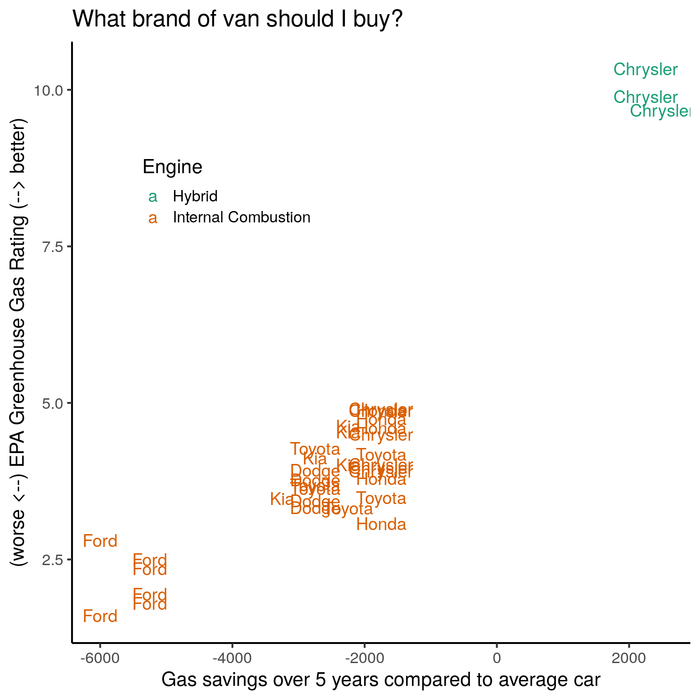

Last updated: 2019-10-16
Checks: 7 0
Knit directory: wflow-tidy-tuesday/
This reproducible R Markdown analysis was created with workflowr (version 1.4.0.9002). The Checks tab describes the reproducibility checks that were applied when the results were created. The Past versions tab lists the development history.
Great! Since the R Markdown file has been committed to the Git repository, you know the exact version of the code that produced these results.
Great job! The global environment was empty. Objects defined in the global environment can affect the analysis in your R Markdown file in unknown ways. For reproduciblity it’s best to always run the code in an empty environment.
The command set.seed(20190611) was run prior to running the code in the R Markdown file. Setting a seed ensures that any results that rely on randomness, e.g. subsampling or permutations, are reproducible.
Great job! Recording the operating system, R version, and package versions is critical for reproducibility.
Nice! There were no cached chunks for this analysis, so you can be confident that you successfully produced the results during this run.
Great job! Using relative paths to the files within your workflowr project makes it easier to run your code on other machines.
Great! You are using Git for version control. Tracking code development and connecting the code version to the results is critical for reproducibility. The version displayed above was the version of the Git repository at the time these results were generated.
Note that you need to be careful to ensure that all relevant files for the analysis have been committed to Git prior to generating the results (you can use wflow_publish or wflow_git_commit). workflowr only checks the R Markdown file, but you know if there are other scripts or data files that it depends on. Below is the status of the Git repository when the results were generated:
Ignored files:
Ignored: .Rhistory
Ignored: .Rproj.user/
Untracked files:
Untracked: data/big_epa_cars.csv
Untracked: data/smaller_epa_cars.csv
Note that any generated files, e.g. HTML, png, CSS, etc., are not included in this status report because it is ok for generated content to have uncommitted changes.
These are the previous versions of the R Markdown and HTML files. If you’ve configured a remote Git repository (see ?wflow_git_remote), click on the hyperlinks in the table below to view them.
| File | Version | Author | Date | Message |
|---|---|---|---|---|
| Rmd | 79e50d4 | John Blischak | 2019-10-17 | Big mtcars |
Sooner rather than later I’m going to need to buy a new car. And let’s face it, it’ll probably be a van. What brand of van should I buy? I explore this below using this week’s #TidyTuesday data.
Conclusion: I should look at Chrysler vans for saving gas and producing fewer greenhouse gases.
library(tidyverse)
theme_set(theme_classic(base_size = 16))Need to set guess_max to a high value so that the columns are correctly parsed. Using on the first 1000 rows, readr erroneously guesses that some columns are logical.
big_epa_cars <- readr::read_csv("data/big_epa_cars.csv", guess_max = 50000)The EPA’s Greenhouse Gas Rating is a scale from 1 (worst) to 10 (best).
big_epa_cars %>%
count(VClass)# A tibble: 34 x 2
VClass n
<chr> <int>
1 Compact Cars 5936
2 Large Cars 2231
3 Midsize Cars 4972
4 Midsize Station Wagons 552
5 Midsize-Large Station Wagons 656
6 Minicompact Cars 1404
7 Minivan - 2WD 368
8 Minivan - 4WD 50
9 Small Pickup Trucks 538
10 Small Pickup Trucks 2WD 476
# … with 24 more rowssummary(big_epa_cars$year) Min. 1st Qu. Median Mean 3rd Qu. Max.
1984 1991 2003 2002 2012 2020 # https://www.epa.gov/greenvehicles/greenhouse-gas-rating
mean(big_epa_cars$ghgScore == -1) # NA[1] 0.7661229summary(big_epa_cars$ghgScore[big_epa_cars$ghgScore != -1]) Min. 1st Qu. Median Mean 3rd Qu. Max.
1.000 4.000 5.000 5.092 6.000 10.000 big_epa_cars %>%
filter(stringr::str_detect(VClass, "[Vv]an", ),
year > 2017) %>%
count(make, VClass)# A tibble: 7 x 3
make VClass n
<chr> <chr> <int>
1 Chrysler Minivan - 2WD 9
2 Dodge Minivan - 2WD 4
3 Ford Vans, Passenger Type 6
4 Honda Minivan - 2WD 5
5 Kia Minivan - 2WD 5
6 Toyota Minivan - 2WD 3
7 Toyota Minivan - 4WD 3big_epa_cars %>%
filter(stringr::str_detect(VClass, "[Vv]an", ),
year > 2017,
ghgScore != -1) %>%
mutate(label = stringr::str_c(make, model, year, sep = "-"),
label = make) %>%
ggplot(aes(x = youSaveSpend, y = ghgScore)) +
geom_text(aes(label = label), size = 5,
position = position_jitter(width = 1, height = 1, seed = NULL)) +
labs(x = "Gas savings over 5 years compared to average car",
y = "(worse <--) EPA Greenhouse Gas Rating (--> better)",
title = "What brand of van should I buy?")
sessionInfo()R version 3.6.1 (2019-07-05)
Platform: x86_64-pc-linux-gnu (64-bit)
Running under: Ubuntu 18.04.3 LTS
Matrix products: default
BLAS: /usr/lib/x86_64-linux-gnu/atlas/libblas.so.3.10.3
LAPACK: /usr/lib/x86_64-linux-gnu/atlas/liblapack.so.3.10.3
locale:
[1] LC_CTYPE=en_US.UTF-8 LC_NUMERIC=C
[3] LC_TIME=en_US.UTF-8 LC_COLLATE=en_US.UTF-8
[5] LC_MONETARY=en_US.UTF-8 LC_MESSAGES=en_US.UTF-8
[7] LC_PAPER=en_US.UTF-8 LC_NAME=C
[9] LC_ADDRESS=C LC_TELEPHONE=C
[11] LC_MEASUREMENT=en_US.UTF-8 LC_IDENTIFICATION=C
attached base packages:
[1] stats graphics grDevices utils datasets methods base
other attached packages:
[1] forcats_0.4.0 stringr_1.4.0 dplyr_0.8.3 purrr_0.3.2
[5] readr_1.3.1 tidyr_1.0.0 tibble_2.1.3 ggplot2_3.2.1
[9] tidyverse_1.2.1
loaded via a namespace (and not attached):
[1] tidyselect_0.2.5 xfun_0.10 haven_2.1.1
[4] lattice_0.20-38 colorspace_1.4-1 vctrs_0.2.0
[7] generics_0.0.2 htmltools_0.4.0 yaml_2.2.0
[10] utf8_1.1.4 rlang_0.4.0 pillar_1.4.2
[13] glue_1.3.1 withr_2.1.2 modelr_0.1.5
[16] readxl_1.3.1 lifecycle_0.1.0 munsell_0.5.0
[19] gtable_0.3.0 workflowr_1.4.0.9002 cellranger_1.1.0
[22] rvest_0.3.4 evaluate_0.14 labeling_0.3
[25] knitr_1.25 fansi_0.4.0 broom_0.5.2
[28] Rcpp_1.0.2 scales_1.0.0 backports_1.1.5
[31] jsonlite_1.6 fs_1.3.1 hms_0.5.1
[34] digest_0.6.21 stringi_1.4.3 grid_3.6.1
[37] rprojroot_1.2 cli_1.1.0 tools_3.6.1
[40] magrittr_1.5 lazyeval_0.2.2 crayon_1.3.4
[43] whisker_0.4 pkgconfig_2.0.3 zeallot_0.1.0
[46] xml2_1.2.2 lubridate_1.7.4 assertthat_0.2.1
[49] rmarkdown_1.15 httr_1.4.1 rstudioapi_0.10
[52] R6_2.4.0 nlme_3.1-141 git2r_0.26.1.9000
[55] compiler_3.6.1